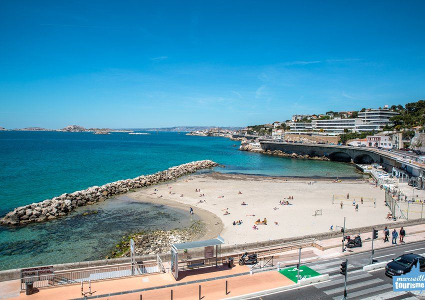
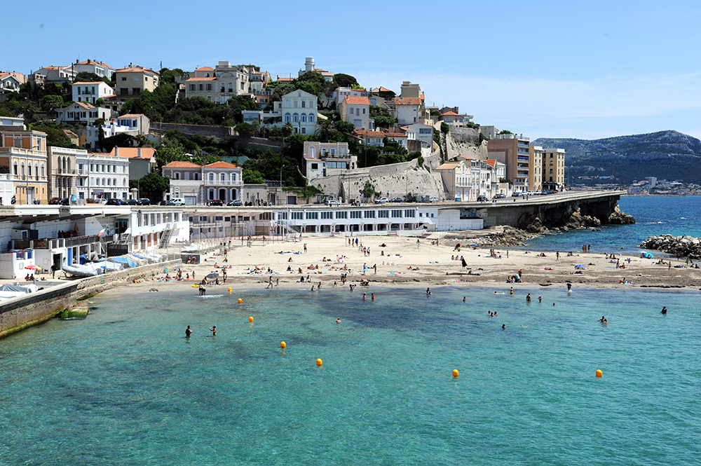
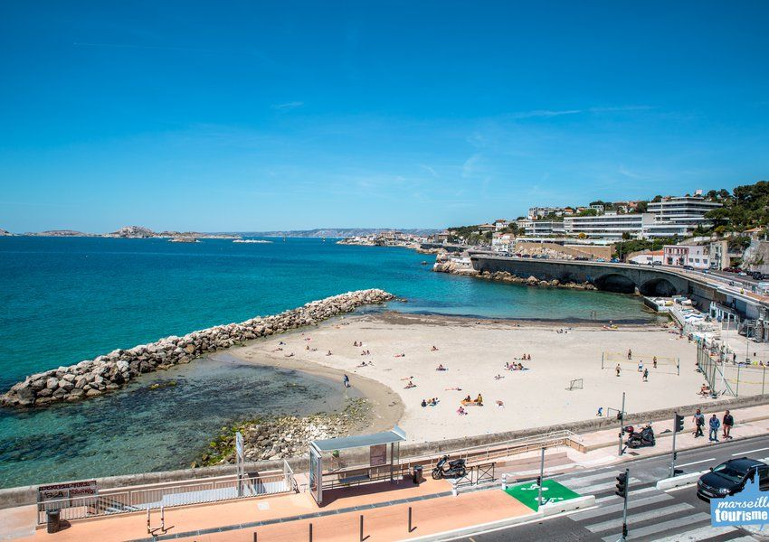
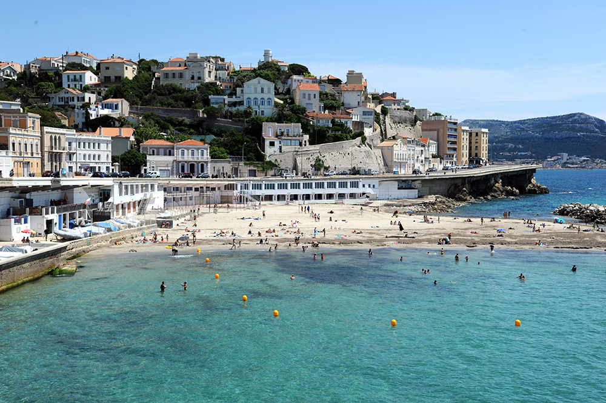

Des Plages Magnifiques


Plage du Prado
C’est la plus grande plage de Marseille, avec une succession de
plusieurs plages en libre accès(Roucas Blanc, Prado Nord, Prado Sud,
Plage de Borély, Vieille Chapelle, Huveaune…) durant 3,5km. Elle est
l’une des plus fréquentées de Marseille, et s’étire du David,
célèbre statue du Prado, jusqu’à la plage de la Vieille Chapelle
proche de la Pointe Rouge.
Elle est entourée de grandes étendues d’herbe qui deviennent le
paradis des amateurs de football ! Très accessible, elle propose des
activités nautiques, des aires de jeux pour enfants, des plages
privées, des terrains de beach-volley, de nombreux sanitaires, des
consignes et plusieurs postes de secours. Elle dispose également
d’un complexe avec restaurants, bars et boutiques : l’Escale Borély.
Tous les étés, elle accueille également plusieurs festivals, le
Delta Festival ou encore la Freestyle Cup, grâce à son skate-park.


Plage du Prado
A quelques minutes du parc balnéaire du Prado, vous pouvez profiter
de la plage de la Pointe-Rouge, plus grande plage sablonneuse de
Marseille jouxtant le petit port du même nom. Elle propose de
nombreux restaurants, bars, aires de jeux, mais également des
consignes, douches, sanitaires et postes de secours.
Elle est souvent très fréquentée car à l’abri du vent ! Vous pouvez
y louer un pédalo, faire du kite surf ou du paddle, partir faire de
la plongée depuis le petit port ou louer un transat dans l’une des
plages privées. Le petit port de la Pointe Rouge, qui est également
une des escales des navettes maritimes, et un point d'embarquement
obligé pour la navette en direction des Goudes.
Cela peut également être le point de départ vers d'autres activités.
Le Parc Pastré situé non loin de là vous offre une véritable évasion
en pleine nature.

Les Calanques
Le massif des Calanques est une merveille de la nature nichée entre
Marseille et Cassis. Ce paysage exceptionnel et unique est un
incontournable à Marseille ! En effet, entre plages de galets et de
sable fin, petites criques et eau turquoise, cet écrin de
biodiversité a tout d’une carte postale ! C’est l’endroit parfait
pour prendre le soleil, explorer les fonds marins, ou encore
s’adonner à quelques activités nautiques comme le kayak.
Que vous souhaitiez randonner ou simplement profiter de la nature et
de l’eau fraîche, ce lieu magnifique vous comblera. Certaines, plus
accessibles que d’autres conviendront parfaitement aux familles,
tandis que d’autres plus difficiles d’accès raviront les amateurs de
randonnée. Ceci-dit, l’effort en vaut la chandelle, c’est un endroit
unique au monde qui mérite bien sa place dans les incontournables de
Marseille !
 



Plage du Prophète
Sur la Corniche Kennedy, en contrebas de la route se trouve la plage
du Prophète, l’une des plus anciennes plages de Marseille et l’une
des plus populaires aussi. Littéralement prise d’assaut l’été venu,
elle fait la joie des plus petits comme des plus grands. La pente de
la mer étant très douce, on a pied assez loin, et les enfants
adorent.
Un terrain de Beach Volley attend les plus
téméraires, tandis que le site comporte toutes les commodités, poste
de secours, douches, snacks et buvettes. Ce lieu est très prisé par
les familles et les habitués du matin, avant de se transformer
l’après midi en un lieu de rendez-vous pour tous les marseillais
d’ici et d’ailleurs. Pique-niques et apéros, le soir les jeunes
viennent de tous les quartiers de la ville et improvisent des
soirées au clair de lune au son de djumbés qui ne manquent jamais de
résonner les soirs d’été.
Du coup la plage peut receler de nombreux mégots, ce qui peut être
un peu rebutant. Ce n’est pas la plage la plus propre de Marseille,
ni celle où l’on vient pour trouver une eau turquoise. On vient au
Prophète pour la convivialité, les journées et les soirées entre
amis, pour taquiner un peu le ballon de volley avant de plonger dans
une contemplation des jolies marseillaises venues des quatre coins
de la ville. C’est la plage de l’été, pour ses journées comme pour
ses soirées.